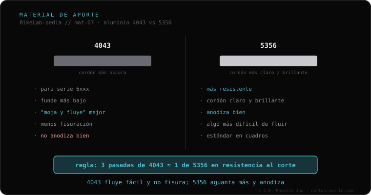

Para soldar aluminio se usa uno de dos aportes. El 4043 está pensado para la serie 6xxx: funde a menor temperatura, fluye y "moja" mejor, fisura menos con el 6061 y deja un cordón más oscuro, pero no anodiza bien. El 5356 es más resistente, deja un cordón más claro y brillante, anodiza correctamente y es el alambre más usado en MIG. Regla práctica de taller: hacen falta ~3 pasadas de 4043 para igualar al corte una sola de 5356.
Cuando se suelda aluminio, no solo importa la técnica: importa con qué se rellena. Y la elección entre estos dos aportes deja huella en resistencia y acabado.
El 4043 (familia 4xxx) está pensado para las aleaciones de la serie 6xxx, como el 6061. Funde a una temperatura menor y, por eso, fluye y "moja" mejor el metal: rellena con más facilidad. Es menos propenso a la fisuración con el 6061, lo que lo vuelve cómodo y seguro en muchas uniones. Su precio: deja un cordón más oscuro y no anodiza bien —el color no agarra de forma uniforme—.
El 5356 (familia 5xxx) es más resistente. Deja un cordón más claro y brillante y, a diferencia del 4043, anodiza correctamente, lo que importa cuando el cuadro va a llevar acabado anodizado. Es el alambre más usado en MIG. A cambio, es algo más difícil de hacer fluir. La diferencia de resistencia se resume en una regla de taller: hacen falta unas tres pasadas de 4043 para igualar al corte (cizalla) una sola de 5356.

El aporte es la pieza que cierra el proceso de soldar aluminio. Por eso conecta con la aleación del cuadro —el 4043 se piensa para la serie 6xxx— y con la técnica empleada, ya que el 5356 es el alambre más usado en MIG. Saber con qué aporte se va a soldar es, además, una de las preguntas útiles que hacer al soldador.
Si quieres entender qué aporte corresponde a tu caso antes de decidir nada, mándanos el caso. Te damos el idioma, sin venderte nada. Escríbenos por WhatsApp
El 4043 está pensado para la serie 6xxx: funde a menor temperatura, fluye y moja mejor y fisura menos con el 6061, pero deja un cordón más oscuro y no anodiza bien. El 5356 es más resistente, deja un cordón más claro y brillante, anodiza correctamente y es el alambre más usado en MIG.
El 5356 es más resistente. Una regla práctica de taller lo resume: hacen falta unas tres pasadas de 4043 para igualar al corte (cizalla) una sola pasada de 5356.
Porque si el cuadro va a anodizarse, el 4043 deja un cordón que no toma bien el color, mientras que el 5356 anodiza correctamente. Es uno de los motivos por los que el 5356 es el alambre más usado en MIG de aluminio.